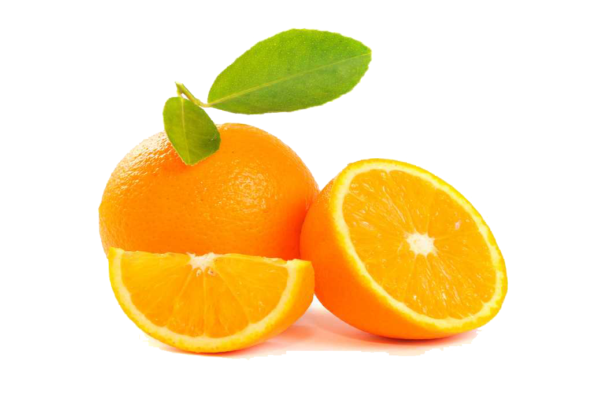

tentangbuah.com
Jeruk
Jeruk adalah buah dari berbagai spesies citrus dalam famili Rutaceae (lihat daftar tanaman yang dikenal sebagai jeruk) terutama mengacu pada Citrus × sinensis, yang juga disebut jeruk manis , untuk membedakannya dari Citrus × aurantium terkait, yang disebut jeruk pahit. Jeruk manis bereproduksi secara aseksual (apomiksis melalui nucellar embryony); varietas jeruk manis muncul melalui mutasi.
Jeruk adalah hibrida antara jeruk bali (Citrus maxima) dan mandarin (Citrus reticulata). Genom kloroplas, dan karena itu garis ibu, adalah jeruk bali. Jeruk manis telah memiliki genom lengkap yang diurutkan.
Jeruk berasal dari wilayah yang meliputi Tiongkok Selatan, India Timur Laut, dan Myanmar, dan penyebutan jeruk manis paling awal adalah dalam literatur Tiongkok pada 314 SM. Hingga 1987, pohon jeruk ditemukan sebagai pohon buah yang paling banyak dibudidayakan di dunia. Pohon jeruk banyak ditanam di iklim tropis dan subtropis untuk buahnya yang manis. Buah jeruk dapat dimakan segar, atau diolah untuk jus atau kulitnya yang harum. Hingga 2012, jeruk manis menyumbang sekitar 70% dari produksi citrus.
Pada 2019, 79 juta ton jeruk ditanam di seluruh dunia, dengan Brasil memproduksi 22% dari total, diikuti oleh Tiongkok dan India.
Khasiat Jeruk
- Melancarkan Penecernaan
- Mengatur Tekanan Darah Tinggi
- Mencegah Kanker
- Mencegah Penyakit Jantung
- Meningkatkan Kekebalan Tubuh
- Memurnikan Darah
Daftar Harga
| Jenis Jeruk | Harga | |
|---|---|---|
| Per Kilo | Per Biji | |
| Jeruk Manalagi | 50.000 | 5.000 |
| Jeruk Fuji | 60.000 | 6.000 |
| Jeruk Anna | 70.000 | 7.000 |
| Jeruk Merah | 55.000 | 5.500 |